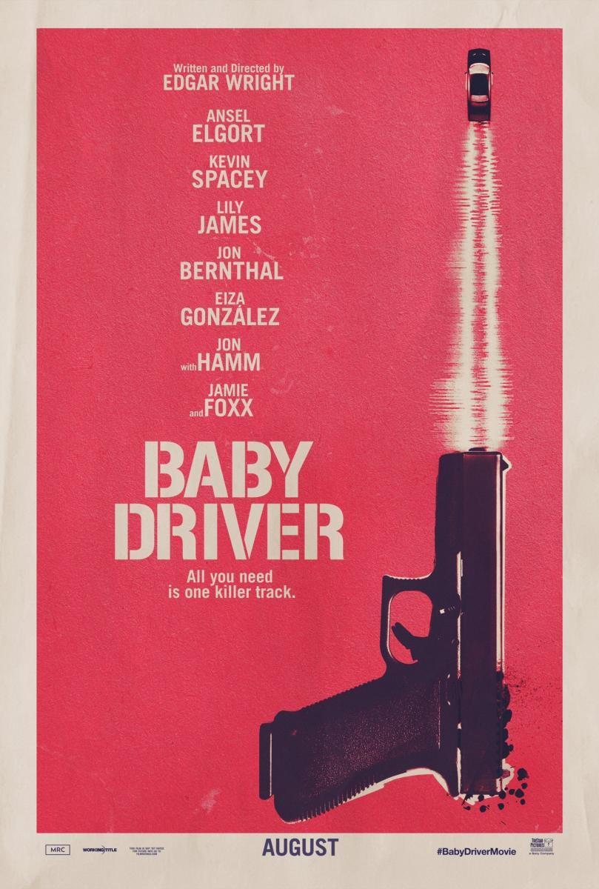

Jessica Lesly
Web developer
After two years in a SEA agency, I decided to learn how to code.
My favorite movies

|
Mad Max - Fury RoadYears after the collapse of civilization, the tyrannical Immortan Joe enslaves apocalypse survivors inside the desert fortress the Citadel. When the warrior Imperator Furiosa (Charlize Theron) leads the despot's five wives in a daring escape, she forges an alliance with Max Rockatansky (Tom Hardy), a loner and former captive. Fortified in the massive, armored truck the War Rig, they try to outrun the ruthless warlord and his henchmen in a deadly high-speed chase through the Wasteland. |
Kill Bill 2The Bride (Uma Thurman) picks up where she left off in volume one with her quest to finish the hit list she has composed of all of the people who have wronged her, including ex-boyfriend Bill (David Carradine), who tried to have her killed four years ago during her wedding to another man. Leaving several dead in her wake, she eventually tracks down Bill in Mexico. Using skills she has learned during her assassin career, she attempts to finish what she set out to do in the first place. |
|
|  |
Baby DriverThe plot follows Baby, a music lover who is coerced to work as a getaway driver for a kingpin. The film features choreography in which the actors' actions synchronize with its soundtrack. |